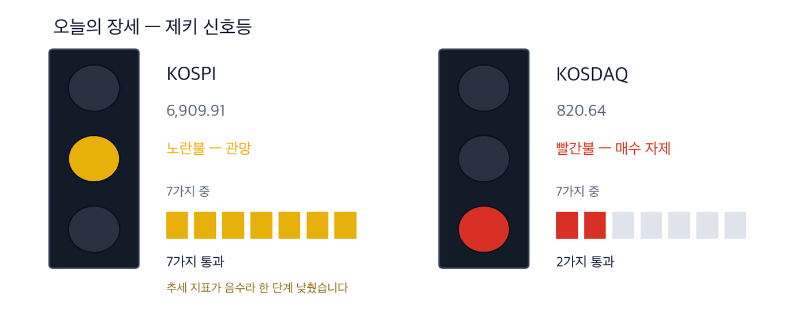
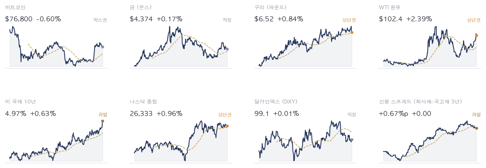
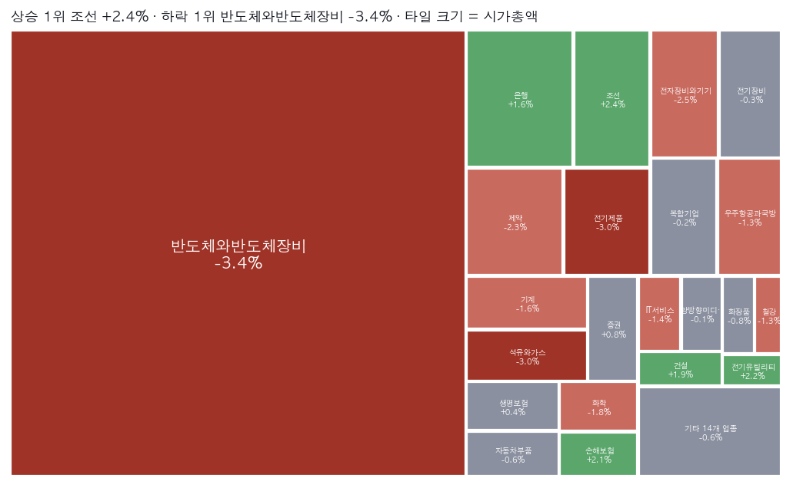
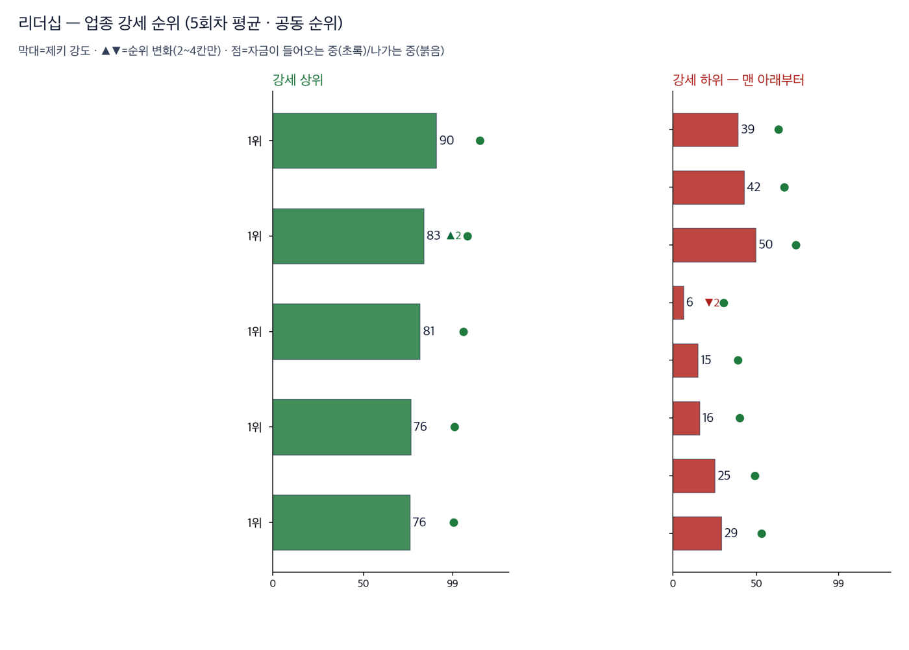
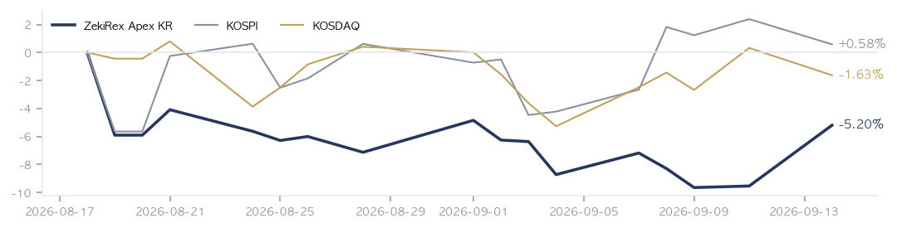

|
ZekiRex™ Apex KR — 2026년 9월 14일
오늘의 판단 · 1/2
데이터 기준 9/11 (KST) 종가 · 간밤 뉴욕 9/11 종가(현지시간) |
ZekiRex™ |
|
|
|
THE REX CALL
주말 사이 이야기가 원유에서 정유로 옮겨갔습니다. 이번 주 서울이 받을 것은 기름을 얼마나 캐느냐가 아니라 얼마나 정제하느냐입니다.
매수도 매도도 없었습니다. 네 자리가 모두 차 있고, 손절선에 닿은 종목이 없습니다.
오늘 반드시 알아야 할 것
1. 트럼프 대통령이 우크라이나에 러시아 정제시설 공격을 멈추라고 요구했습니다. 뉴욕타임스는 대통령이 세계 경유 부족을 우크라이나 탓으로 돌렸다고 전했고, 조선일보는 미국 경유값이 갤런 6달러를 넘은 뒤 나온 요구라고 했습니다. 동아일보는 푸틴 대통령이 유럽 가스값 1.5배를 경고했다고 보도했습니다. (뉴욕타임스·폴리티코 유럽·조선일보·동아일보) 2. 래리 엘리슨이 최대 75억달러 규모의 오라클 주식 매각 계획을 거뒀습니다. 한국경제는 오라클 회사채 발행금리가 8%에 육박한다고 전했습니다. 설비 투자를 빌린 돈으로 하는 회사의 조달 조건이 이 두 소식에 함께 담겨 있습니다. (월스트리트저널·CNBC·한국경제) 3. 원·달러가 두 달 사이 200원 넘게 내렸습니다. 이데일리가 전했고, 매일경제는 지수 방향이 외국인 수급에 달렸다는 관망 목소리를 실었습니다. 환율이 내리는 국면은 외국인에게 환차익이 붙는 국면입니다. (이데일리·매일경제) 4. 70억달러 규모 알래스카 가스 사업이 대미 투자 목록에 조건부로 들어갔고, 정부가 프로젝트 인수를 저울질하고 있다고 이데일리가 단독 보도했습니다. 도입 경로가 바뀌면 정제와 발전 쪽 원가 구조가 함께 움직입니다. (이데일리) 5. 사우디 송유관 중단의 크기가 주말에 숫자로 나왔습니다. 로이터는 세계 공급의 4%가 위태롭다고 전했고, 동아일보와 머니투데이는 육지와 해상 경로가 함께 막혀 하루 500만 배럴이 묶였다고 보도했습니다. 토요일에는 사건만 알려졌고 크기는 주말에 붙었습니다. (로이터·동아일보·머니투데이)
| |
 이 그림 읽는 법 | 켜진 등 | 오늘의 국면입니다. 초록은 매수 우위, 노랑은 관망, 빨강은 매수 자제입니다. | | 채워진 칸 | 7가지 조건 중 몇 개를 통과했는지입니다. 칸이 많이 찰수록 시장 구조가 튼튼합니다. | | 칸이 다 찼는데 노랑·빨강이면 | 다른 이유로 한 단계 낮춘 것입니다. 그림 아래에 그 이유를 적었습니다. |
|
최근 10거래일 국면 추이 (왼쪽이 과거) 방향 — 어디까지 왔나. 이 신호등은 7가지 조건을 세어 정합니다. 코스피는 노란불, 코스닥은 빨간불입니다. 색이 갈린 날은 큰 종목과 작은 종목이 다른 값을 받은 날입니다. 초록불로 올라가려면 지수가 값으로 따라와야 하고, 9월 11일에는 반대로 움직였습니다.
| |
| 오늘의 조치 | | 오늘 신규 매매 없음. 규칙이 요구하지 않는 날에 거래하지 않는 것도 하나의 결정입니다. |
|
| 종목 | 비중 | 평가금액 | 평가손익 | 현재가 | 손절가 | 여유 | 보유일 | 다음 이벤트 | | 자이에스앤디 | 25% | ₩236,989,610 | +₩0 | ₩11,330 | ₩10,424 | +8.7% | 2일 | — | | 지엔씨에너지 | 25% | ₩236,959,800 | +₩0 | ₩50,600 | ₩46,552 | +8.7% | 2일 | — | | 현대해상 | 25% | ₩236,954,700 | +₩0 | ₩51,300 | ₩47,196 | +8.7% | 2일 | — | | GS | 25% | ₩236,929,000 | +₩5,574,800 | ₩119,000 | ₩106,904 | +11.3% | 20일 | — | | 현금 | — | ₩128,030 | 아직 투자하지 않은 돈입니다 |
계좌 요약 | 시작 자본 | ₩1,000,000,000 | 2026-08-18 설정 | | 실현 손익 | −₩57,613,660 | 판 종목에서 확정된 금액 | | 평가 손익 | +₩5,574,800 | 들고 있는 종목의 장부상 손익 | | 현재 평가액 | ₩947,961,140 | 시작 대비 −5.20% | | 최고 평가액 | ₩1,000,000,000 | 지금은 고점 대비 −5.20% |
시작 자본에 실현 손익과 평가 손익을 더하면 현재 평가액이 됩니다. |
| 관문을 통과한 종목 — 자리가 없어 담지 못한 이름들 | | 금융 4 | | 005830 DB손해보험 | RS 83 | ₩191,700 | | 055550 신한지주 | RS 82 | ₩112,900 | | 086790 하나금융지주 | RS 82 | ₩137,800 | | 105560 KB금융 | RS 81 | ₩177,900 | | 소비 3 | | 192820 코스맥스 | RS 92 | ₩270,500 | | 278470 에이피알 | RS 91 | ₩372,000 | | 073240 금호타이어 | RS 87 | ₩7,370 | | 반도체·하드웨어 2 | | 252990 샘씨엔에스 | RS 91 | ₩15,780 | | 098120 마이크로컨텍솔 | RS 90 | ₩55,800 | | 산업재·인프라 1 | | 028670 팬오션 | RS 80 | ₩6,030 | | 기타 1 | | 089860 롯데렌탈 | RS 89 | ₩49,300 |
| 왜 못 담았나. 자리는 넷뿐이고 각 자리에 총자산 25%가 들어갑니다 — 한 종목이 −8%에 걸려도 계좌 전체로는 2% 손실이 되도록 맞춘 구조입니다. 자리를 비우는 길은 손절과 오실레이터 이탈 둘뿐이라, 더 좋은 후보가 나와도 갈아타지 않습니다.
이 목록이 뜻하는 것. 15개가 조건을 통과했고 그중 보유 중인 종목을 뺀 11개가 대기 중입니다. RS는 80~92입니다. 우리 4자리는 에너지·정유 1, 산업재·인프라 1, 반도체·하드웨어 1, 금융 1로 나뉘어 있고 가장 큰 쪽이 에너지·정유입니다 — 그래서 하루 등락이 지수와 평균 2.4%p 벌어졌고, 가장 크게 갈린 9/7 세션에는 코스피 보다 5.6%p 더 내렸습니다. 자리가 하나 열리면 이 순서의 맨 위부터 검토합니다. 매수 추천이 아닙니다. |
조건은 통과했지만 품질 하한에서 걸린 종목 | 에이피알 278470 — 품질 하한 미달 | | 롯데렌탈 089860 — 재무 등급 SMR E — 품질 하한 미달 | | 금호타이어 073240 — 품질 하한 미달 | | DB손해보험 005830 — 품질 하한 미달 |
|
| 핵심 지표 | 코스피 6,910 -1.76% · 고점 −24.2% 1.76% 내린 6,909.91로 7,000선을 내줬습니다. 저희 신호등이 노란불에 머무는 이유가 이 한 줄에 있습니다 — 조건은 통과했는데 값이 따라오지 않았습니다. 박스권 | 코스닥 821 -1.95% · 고점 −33.1% 1.95% 내린 820.64입니다. 코스피보다 더 내렸고, 저희 신호등에서 코스닥만 빨간불입니다. 중소형주가 먼저 무거워지는 국면입니다. 박스권 | 원/달러 ₩1,343.80 9월 11일 기준 1,343.80원입니다. 두 달 사이 200원 넘게 내렸다고 이데일리가 전했습니다. 수출기업에는 불리하고, 외국인 매수에는 유리한 방향입니다. 과매도 | 국고채 3년 4.01% 과열 | S&P 500 7,657 신고가권 | 포트폴리오 -5.20% 현금 0% · 보유 4종목 설정 이후 |
|
| 한 줄 정리: 오늘 뉴스레터가 예정보다 늦게 도착했습니다. 양해를 구합니다. 토요일 총결산과 같은 9월 11일 종가에 붙어 있지만, 그 뒤 주말에 새로 생긴 것만 다룹니다. 토요일에 말씀드린 국고채 금리와 한 주간 기름값 상승은 되풀이하지 않습니다. 9월 11일 서울은 코스피가 1.76% 내린 6,909.91로 7,000선을 내줬고, 코스닥은 1.95% 내린 820.64였습니다. 그 뒤로 문을 연 시장은 없습니다. |
|
|
|
판단의 근거 · 2/2
데이터 기준 9/11 (KST) 종가 · 간밤 뉴욕 9/11 종가(현지시간) |
ZekiRex™ |
|
|
| 오늘 반드시 알아야 할 것 |
|
기름은 있는데 정제할 곳이 모자랍니다
주말에 들어온 소식 두 건이 같은 곳을 가리킵니다. 미국 경유값이 갤런 6달러를 넘었고, 트럼프 대통령이 우크라이나에 러시아 정제시설 공격을 멈추라고 요구했다고 뉴욕타임스가 전했습니다. 조선일보는 그 요구가 경유값이 6달러를 넘은 뒤에 나왔다고 적었습니다. 원유를 더 캔다고 경유가 곧바로 늘지는 않습니다. 정제 설비는 지어지는 데 몇 해가 걸리고, 부서지는 데는 하룻밤이면 됩니다. 왜 그런가. 지난주 이야기는 공급 경로였습니다. 사우디 송유관이 막혔고, 주말에 그 크기가 숫자로 붙었습니다 — 로이터는 세계 공급의 4%, 동아일보와 머니투데이는 하루 500만 배럴이라고 전했습니다. 이번 주 이야기는 그 다음 단계입니다. 원유가 배럴당 100달러 언저리에 머물러도, 그것을 경유로 바꿀 설비가 모자라면 값은 다른 곳에서 오릅니다. 다음에 무엇이. 다음에 볼 것은 9월 14일 서울이 이 두 가지를 어떻게 받는지입니다. 금요일 1.76% 하락 뒤 첫 거래이고, 7,000선을 되찾는지와 외국인이 사는 쪽인지가 같은 날 답을 냅니다.
그래서 우리는: 정유와 해운을 보고 계신 독자라면 이번 주에는 원유값보다 정제 마진을 보시는 편이 낫습니다. 기준을 넘은 15종목 가운데 에너지 지주 GS(078930)가 제키 강도 95로 둘째 자리이고, 해운사 팬오션(028670)이 80으로 끝자리에 있습니다. 병목이 길어지면 운임이 먼저 오릅니다.
Rex Lens™
| |
| 그 밖에 알아야 할 것 | | 이번 주 13개국이 정책 결정 · 매일경제는 이번 주에 13개국이 정책 회의를 연다며 선진국에서 시작된 조임이 줄줄이 이어질 수 있다고 전했습니다. 회의는 목요일까지 이어집니다. (매일경제) → 한 나라의 결정이 아니라 한 주 동안 줄지어 나오는 결정입니다. 하나가 아니라 방향이 모일 때 자금 이동이 커집니다. | | 중앙아시아 5개국과 서울 선언 · 머니투데이는 이번 주 서울에서 중앙아시아 다섯 나라와 공동 선언이 나온다고 전했습니다. 광물과 에너지를 축으로 한 경제 외교 확장이 핵심입니다. (머니투데이) → 원료 조달처를 넓히는 합의는 계약이 나오기까지 시간이 걸립니다. 당장 값이 아니라 몇 해 뒤 조달 구조를 보는 항목입니다. | | 12월 첫 입주 신도시, 교통대책 87%가 지연 · 동아일보는 12월 첫 입주를 앞둔 신도시의 교통대책 87%가 일정보다 늦어지고 있다고 단독 보도했습니다. 광역급행버스와 지하철 연장 사업이 잇따라 유찰됐습니다. (동아일보) → 9월 10일 판정에서 첫 자리에 오른 곳이 주택 개발과 시설 운영을 함께 하는 자이에스앤디(317400)입니다. 택지 일정은 이 업종의 매출 인식 시점을 미룹니다. | | 거래소 애프터마켓, 14일부터 중소형주까지 · 매일경제는 한국거래소가 14일부터 정규장 뒤에도 사고팔 수 있는 시간대를 열어 중소형주까지 넓힌다고 전했고, 동아일보는 저녁 8시까지 열린다고 했습니다. (매일경제 · 이데일리 · 동아일보) → 거래 시간이 늘면 같은 소식이 값에 반영되는 시각이 달라집니다. 정규장 종가로 판정하는 저희 규칙에는 체결 시각을 다시 볼 일이 생깁니다. | | 홍콩거래소, 한국 기업 유치 · 매일경제는 홍콩거래소가 국내 중복 상장 규제의 틈을 노려 한국 기업 유치에 나섰다고 전했습니다. 규제가 자리를 잡기 전에 움직이겠다는 계산입니다. (매일경제) → 자회사를 밖에 올리면 모회사 주주가 나눠 갖는 몫이 줄어듭니다. 지주회사를 들고 있는 쪽이 미리 보아야 할 항목입니다. |
| 한국과 미국을 잇는 것: 이 둘이 한국에 닿는 길은 다릅니다. 정제 이야기는 원가로 오고, 조달 이야기는 주문으로 옵니다. 미국의 데이터센터 투자가 조달 조건 때문에 늦춰지면 한국 메모리 주문이 따라 늦춰집니다. 반대로 원·달러가 두 달 새 200원 내린 것은 외국인에게 환차익이 붙는 국면이며, 매일경제는 지수 방향이 외국인 수급에 달렸다는 관망 목소리를 실었습니다. |
 Rex Pulse™ — 지수·가상자산 / 통화 / 원자재 / 채권 16종, 1년 추이와 50일 이동평균(점선) · 기준 한국 9/11 종가, 뉴욕 9/13 종가(현지시간) |
저희가 시장에 매기는 신호등은 노란불입니다. 코스피는 노란불, 코스닥은 빨간불입니다. 두 지수가 갈린 것은 9월 11일 코스닥이 1.95% 내려 코스피의 1.76%보다 더 밀렸기 때문입니다. 큰 종목과 작은 종목이 다른 값을 받았다는 뜻입니다. 노란불에서는 자리를 새로 늘리지 않으므로, 독자께서 봐야 할 것은 코스닥이 빨간불에서 올라오는지입니다. |
 색은 당일 등락(짙을수록 큼), 타일은 시가총액입니다. 상단에 당일 상승·하락 1위가 적혀 있고, 큰 칸이 움직인 날이 지수가 움직인 날이라는 뜻입니다 — 아래 리더십 순위(추세의 힘)와 함께 읽으십시오. |
| 리더십 — 업종 강세 순위 |  이 그림 읽는 법 | 막대 | 업종 소속 종목의 제키 강도 중앙값입니다. 최근 5회차를 평균해 하루치 흔들림을 걷어냈습니다. | | ▲▼ 숫자 | 하루 전보다 순위가 몇 칸 움직였는지입니다. 1칸은 너무 작고 5칸 이상은 절반이 되돌아와서(실측) 2~4칸만 적습니다. | | 점 | 20거래일 자금 순위의 방향입니다. 초록이면 들어오는 중, 붉으면 나가는 중입니다. | | 공동 순위 | 값이 같으면 같은 순위입니다. 억지로 가르지 않습니다. |
| 순위 | 업종 | 제키 강도 | 변화 |
|---|
| 1위 | 석유와가스 | 90 | | | 1위 | 건설 | 83 | ▲2 | | 1위 | 반도체와반도체장비 | 81 | | | 1위 | 자동차부품 | 39 | | | 1위 | 기계 | 42 | | | 1위 | 증권 | 50 | |
| | 수급 — 외국인·기관은 어느 쪽이었나 |  이 그림 읽는 법 | 점 하나 | 종목 하나입니다. 가로·세로 위치가 두 값을 그대로 나타내고, 가운데 가로·세로로 그어진 두 선이 기준선입니다. 네 귀퉁이의 이름표가 그 칸의 뜻입니다. | | 점 크기 | 최근 한 달 등락폭입니다. 오르든 내리든 크게 움직였으면 큰 점입니다. | | 점 색 | 제키 강도입니다. 초록일수록 주가가 시장에서 강합니다. | | 30종목만 | 이름이 겹치면 못 읽기 때문입니다. 가운데 몰린 나머지는 움직임이 거의 없는 종목들이라 뺐습니다. |
 이 그림 읽는 법 | 네 칸 | 가로와 세로 두 값이 각각 기준선을 넘었는지로 넷을 가릅니다. 오른쪽 위는 둘 다 넘은 곳, 왼쪽 아래는 둘 다 못 넘은 곳, 나머지 두 칸은 한쪽만 넘은 곳입니다. 칸 이름이 그 칸에 든 종목의 상태를 한 문장으로 적어 둔 것입니다. | | 가운데 두 칸 | 두 기간을 견주는 자리입니다. 글자 A~E가 있으면 이 업계가 쓰는 표준 등급으로, A는 강한 매수, B는 매수 우세, C는 매수와 매도가 반반, D는 매도 우세, E는 강한 매도를 뜻합니다(전체를 다섯으로 나눈 순위라 A가 상위 20%입니다). 숫자가 있으면 그 기간의 순매수 규모입니다. | | 칸마다 9종목 | 그 칸에서 움직임이 가장 큰 순서입니다. 나머지는 칸 아래에 몇 종목인지만 적었습니다. 옆 산점도가 이름을 다는 종목이 바로 이 9종목씩입니다. | | 한 달 막대 | 0을 가운데 두고 오른쪽이 상승, 왼쪽이 하락입니다. 길이는 같은 칸 안에서만 서로 견주십시오 — 칸마다 기준이 다릅니다. | | 제키 강도 | 1~99 순위입니다. 막대가 길수록, 초록에 가까울수록 그 종목의 주가가 시장에서 강합니다. |
 이 그림 읽는 법 | 막대 둘 | 위가 석 달, 아래가 최근 두 주입니다. 같은 종목의 두 기간을 나란히 놓았습니다. | | 가운데 선 | 0.50 입니다. 오른쪽이면 오르는 날에 거래가 더 몰렸고, 왼쪽이면 내리는 날에 몰렸습니다. | | 화살표 | 석 달에서 두 주로 가는 방향입니다. 오른쪽으로 가면 최근에 더 들어온 것이고, 왼쪽이면 식은 것입니다. | | 맨 오른쪽 글씨 | 그 방향을 말로 적은 것입니다 — 「최근에 더 들어옴」이면 자금이 이어지는 중입니다. |
이름을 확인한 종목 전부를 넷으로 갈랐습니다. 오른쪽으로 갈수록 외국인이 샀고, 위로 갈수록 기관이 샀습니다. 지금 누가 사고 있는지를 보여 주는 자리이지 무엇을 사라는 자리가 아닙니다. 업종 — 값의 강세와 돈의 흐름을 나란히 돈이 먼저 온 곳 — 값은 아직입니다 | 업종 | 강세 | 자금 | 20거래일 |
|---|
| 조선 | 51 | 16 | +356,603주 | | 화학 | 32 | 11 | +1,437,117주 | | 무역회사와판매업체 | 19 | 2 | +16,671,950주 |
값만 센 곳 — 돈은 빠지고 있습니다 | 업종 | 강세 | 자금 | 20거래일 |
|---|
| 전자장비와기기 | 11 | 43 | -7,036,393주 | | 백화점과일반상점 | 11 | 37 | -3,178,316주 | | 복합기업 | 9 | 30 | -1,460,418주 |
강세 순위 — 제키 강도(12개월 가중)로 세운 순위입니다. 최근 5회차를 평균해 하루치 흔들림을 걷어냈습니다. 자금 순위 — 20거래일 순매수로 세운 순위입니다. 값이 아니라 **돈이 들어온 양**을 봅니다. 공동 순위 — 값이 같으면 같은 순위를 줍니다. 억지로 가르지 않습니다. 두 순위가 어긋나면 — 그 자리가 볼 만합니다. 돈이 먼저 오면 값이 아직인 것이고, 값이 먼저 세면 돈이 빠지는 중일 수 있습니다. |
| Rex 25™ — 당일 등락률 전체 순위 | | 01 ● 317400 자이에스앤디+13.30% | | 02 252990 샘씨엔에스+13.12% | | 03 098120 마이크로컨텍솔+9.41% | | 04 278470 에이피알+3.05% | | 05 005830 DB손해보험+2.95% | | 06 105560 KB금융+2.60% | | 07 055550 신한지주+2.36% | | 08 192820 코스맥스+2.08% | | 09 086790 하나금융지주+1.85% | | 10 ● 001450 현대해상+1.79% | | 11 028670 팬오션+1.01% | | 12 ● 078930 GS+0.93% | | 13 089860 롯데렌탈+0.41% | | 14 ● 119850 지엔씨에너지-1.17% | | 15 073240 금호타이어-4.04% |
| 616종목 가운데 15개가 저희 기준을 넘었습니다. 그 15개의 성격이 이날의 이야기입니다. 금융이 5개입니다 — 현대해상(001450), DB손해보험(005830), 신한지주(055550), 하나금융지주(086790), KB금융(105560)입니다. 국내 금리가 4% 언저리에 머무는 동안 이자로 버는 쪽이 남아 있다는 뜻입니다. 맨 위는 자이에스앤디(317400)로 제키 강도 98이고, 에너지 지주 GS(078930)가 95로 뒤를 잇습니다. | | 15종목뿐입니다. 25자리 가운데 오늘 조건을 만족한 것이 15개라는 뜻이고, 빈자리는 채우지 않습니다. ● 표시가 우리 보유 종목입니다. 순서는 등락률만 따릅니다 — 하락 상위에 보유 종목이 있어도 그 자체가 매도 신호는 아닙니다. 매도는 −8% 손절과 오실레이터 이탈, 둘뿐입니다. |
| 보유 비중 — 하한 8% / 진입 25% | | 자이에스앤디 31740025.0% | | 지엔씨에너지 11985025.0% | | 현대해상 00145025.0% | | GS 07893025.0% |
25%는 진입 시점의 크기이지 보유 한도가 아닙니다. 오른 종목을 크다는 이유로 줄이지 않습니다. |
| Rex Radar™ — 앞으로의 일정 | | 이번 주의 핵심 — 두 번째로 무거운 것은 돈값입니다. 래리 엘리슨이 최대 75억달러 규모의 오라클 주식 매각 계획을 거뒀다고 월스트리트저널이 전했고, 한국경제는 오라클 회사채 발행금리가 8%에 육박한다고 보도했습니다. 설비를 빌린 돈으로 짓는 회사에 8%는 다른 세상입니다. | | 9월 14일 (월) 09:00 KST | 서울 개장 — 9월 11일 1.76% 하락 뒤 첫 거래핵심 7,000선을 하루 만에 되찾는지가 지난주 하락이 조정인지 추세인지를 가릅니다. 볼 숫자: 코스피가 7,000을 회복하는지, 그리고 외국인이 순매수로 도는지 봅니다. | | 9월 14일 (월) 09:30 ET | 뉴욕 개장 — 주말 정제시설 소식을 처음 값으로 받는 자리핵심 원유값이 아니라 경유값이 먼저 움직이면 이번 주 이야기는 정제 쪽입니다. 볼 숫자: WTI가 배럴당 100달러 위에 머무는지, 미국 경유가 갤런 6달러 위인지 봅니다. |
|
|
 설정 이후 누적 수익률입니다. 계좌 −5.20%, 코스피 +0.58%, 코스닥 −1.63%입니다. 모델 포트폴리오가 9월 11일 종가로 전면 교체되었기 때문에, 이 선의 그 전 구간은 옛 구성의 기록이라는 뜻입니다. 새 구성의 성적은 여기서부터 쌓입니다. 그래서 지금 이 격차를 실력으로 읽으시면 안 되고, 앞으로 몇 주 동안 계좌 선이 코스피 선과 벌어지는 방향을 봐야 합니다. |
| 2026-09-11 종가 기준 심사 대상 616종목 가운데 15종목이 조건을 통과했습니다. 조건 통과는 매수 추천이 아닙니다. |
| 출처: 한국거래소(KRX) 공시 시세, 15:30 종가 · 서울외국환중개 고시환율(네이버 금융) · 야후 파이낸스 · 네이버 금융 |
|
본 리포트는 정보 제공 목적이며 개별 투자 자문이 아닙니다. ZekiRex™ Apex KR는 10억 원 규모의 모의 포트폴리오를 규칙 기반으로 운용합니다 — 실제 계좌도, 주문도, 체결도 없습니다. 표시된 성과에는 수수료와 세금, 매매 시 가격 미끄러짐이 반영되지 않았습니다. 종목 자료에는 상장폐지된 회사가 빠져 있습니다. 그래서 성과가 실제보다 높게 나오는 치우침(생존편향)이 있습니다. 과거의 성과는 미래를 보장하지 않으며, 투자에는 원금 손실 위험이 따릅니다. |
| This is the Rex Way, ZekiRex™ |
|